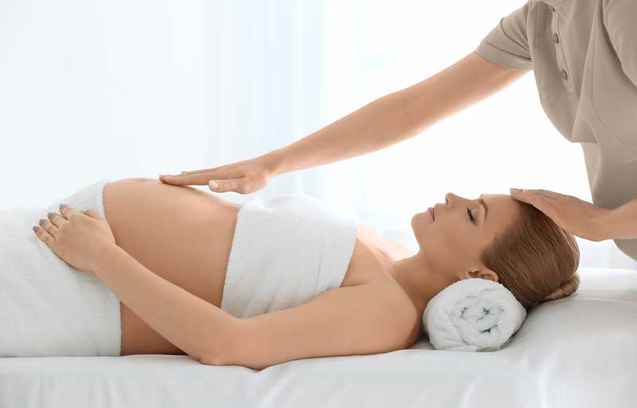

Tratamientos
Especialidades de masajes
Ayuvérdico
El masaje ayurvédico viene de la medicina tradicional India.
Tiene como objetivo relajar,calmar las tensiones nerviosas,
reabsorber el estrés y facilitar el sueño. Es un masaje en el que se utiliza aromas. Efectos:
-Sobre la piel de la cara: aumenta la circulación facial, lo cual rejuvenece la piel, disminuye las arrugas, relaja las líneas de expresión, da aspecto más juvenil.
.
-Sobre la mente: alivia el estrés, revitaliza la mente y mejora la concentración.
.
-Sobre la cintura escapular, espalda, cráneo y cuello: despeja las tensiones, libera la fatiga, previene el insomnio, los dolores de cabeza y es ideal para el bruxismo.
Tiene como objetivo relajar,calmar las tensiones nerviosas,
reabsorber el estrés y facilitar el sueño. Es un masaje en el que se utiliza aromas. Efectos:
-Sobre la piel de la cara: aumenta la circulación facial, lo cual rejuvenece la piel, disminuye las arrugas, relaja las líneas de expresión, da aspecto más juvenil.
.
-Sobre la mente: alivia el estrés, revitaliza la mente y mejora la concentración.
.
-Sobre la cintura escapular, espalda, cráneo y cuello: despeja las tensiones, libera la fatiga, previene el insomnio, los dolores de cabeza y es ideal para el bruxismo.
Champisaje
Es un tipo de masaje ayurvédico, en el cual lo centro más en pies,espalda y cabeza con aceite.
Otros
-Relajantes.
- Descontracturantes (con o sin ventosas ).
- Reflexologia podal.
- Deportivos.
- Faciales.
- Prenatal.
- Drenantes y reafirmantes.
- Sueco.
Maderoterapia
Es una técnica consistente en utilizar diferentes elementos de madera.
Es una técnica consistente en utilizar diferentes elementos de madera.
Efectos:
-Combate la celulítis.
-Reafirma la piel.
-Disminuye niveles de estrés y dolores.
-Equilibra la energía.
-Ayuda con la retención de líquidos.
-Estimula la producción de vitamina E,colágeno y elastina.
Precio/Tiempo:
Todos dependen de la necesidad del cliente.

